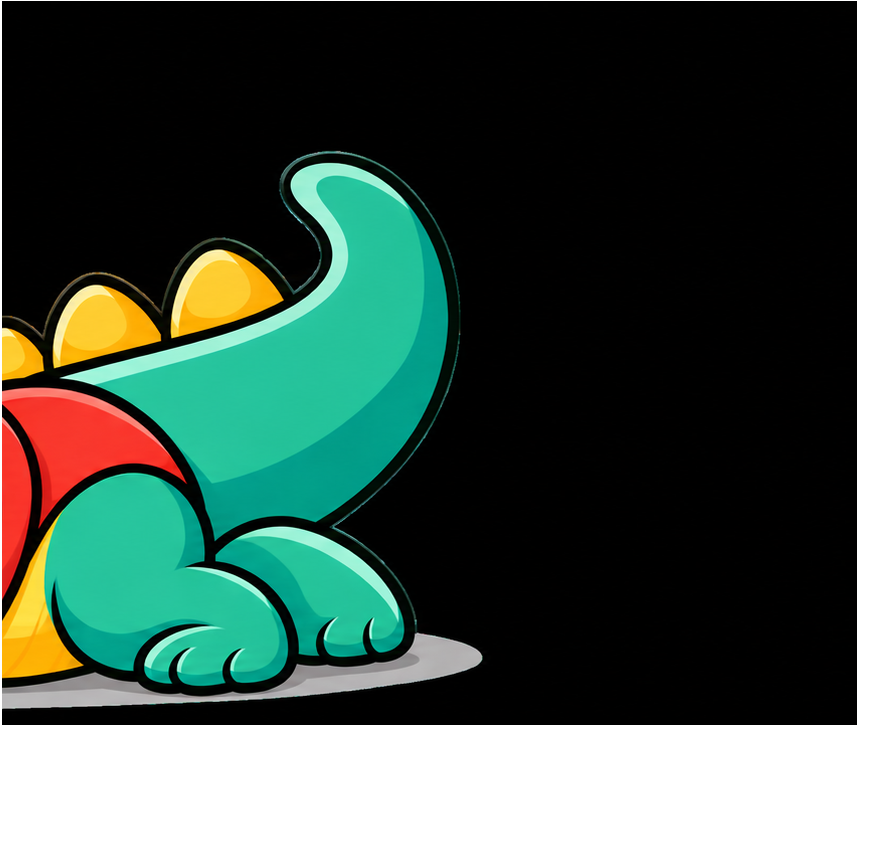
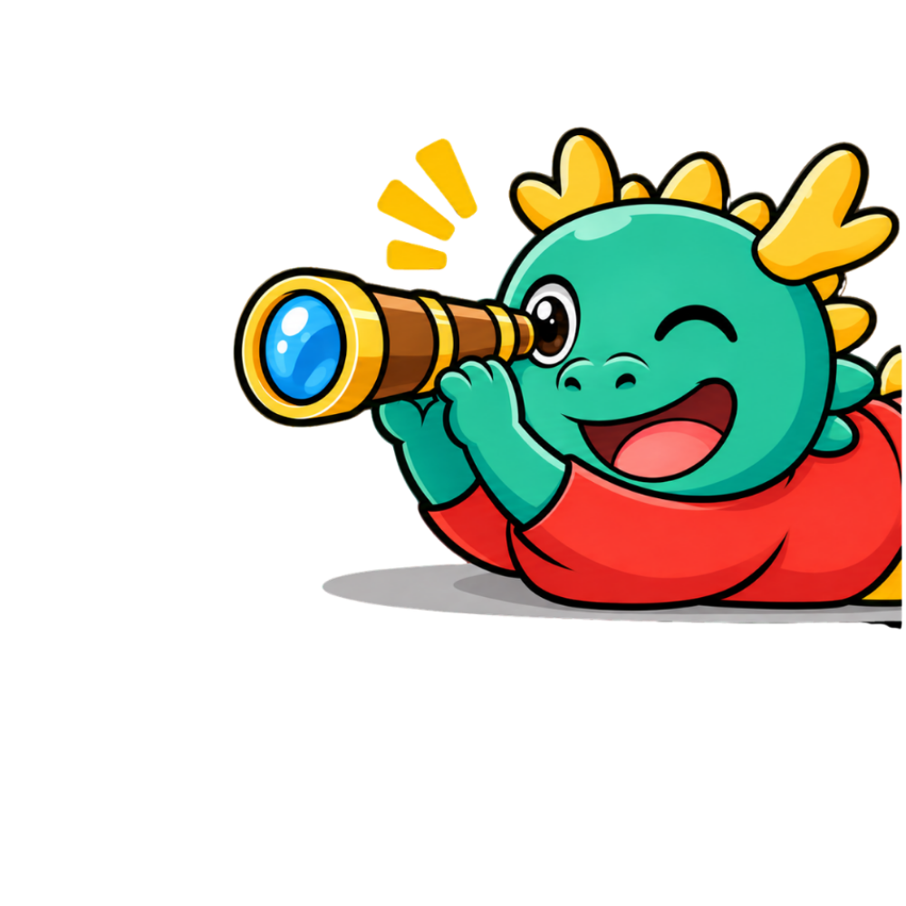

考古題系統
國小自然科考古卷搜尋、整理與練習的資源站。
國小自然科考古卷搜尋整理與練習的資源站
開始探索 →

從探索月相、光學、電路到各種自然現象，透過互動模擬
自己動手操作，親眼看見，自然理解。
從探索月相、光學、電路到各種自然現象透過互動模擬，自己動手操作親眼看見，自然理解。
進入「晟自然玩科學」 ↗自然不是記住答案更不是一堆公式而是一種看懂世界的方法
我是晟老師，歡迎來到晟自然。
我致力於將枯燥的自然科學，轉化為易懂的趣味內容。透過實驗模擬，讓原本抽象難懂的科學原理，變成孩子看得到、玩得到的驚奇體驗。無論你是對世界充滿好奇的學生，還是想讓孩子愛上學習的家長，這裡都是你們的線上科學實驗室。
我是晟老師，歡迎來到晟自然。把自然科學變得有趣、易懂，從生活探索世界。
可檢查兩支手機是否使用相同版本。